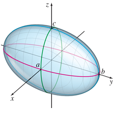
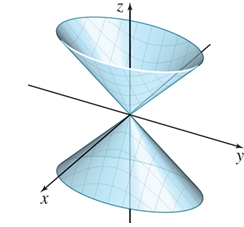
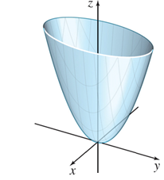
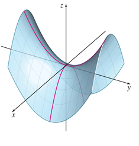
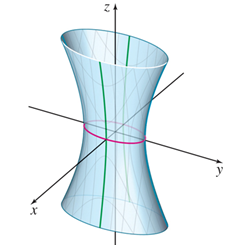
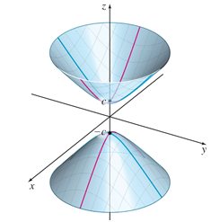
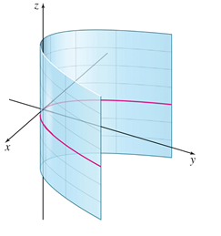
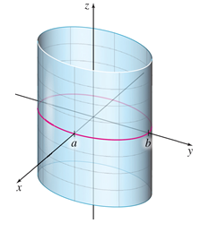
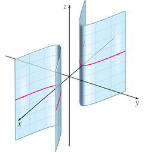

Lesson 14: Quadric Surfaces
A quadric surface is the graph of a second-degree equation in three variables.
There are a few different quadric surfaces that will come up in our study of calculus.
Ellipsoid

Elliptic Cone

Elliptic Paraboloid

Hyperbolic Paraboloid

Hyperboloid of One Sheet

Hyperboloid of Two Sheets

Parabolic Cylinder

Elliptic Cylinder

Hyperbolic Cylinder

An Example
Consider the equation below.
Which of the options best describes the graph of this equation?
The variable \(z\) does not appear, so the surface is a cylinder: the curve in the \(xy\)-plane extends straight up and down. The \(x^2\) and \(y^2\) terms have opposite signs, so that curve is a hyperbola.
Hyperbolic Cylinder
Another Example
Consider the equation below.
Which of the options best describes the graph of this equation?
All three variables are squared, two terms are positive, one term is negative, and the equation equals \(+1\). This matches the form of a hyperboloid of one sheet, with \(a^2 = 9\), \(b^2 = 3\), and \(c^2 = 6\).
Hyperboloid of One Sheet